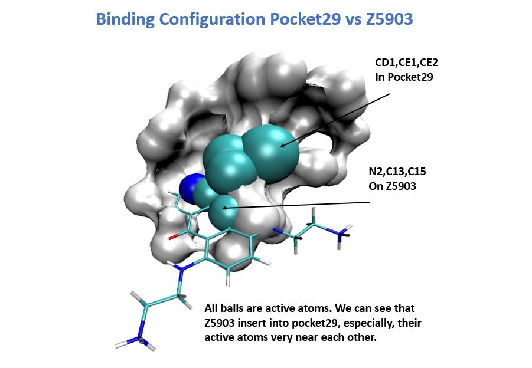

Quantum Mechanics Calculation of KRAS
Kras protein is a membrane-bound GTP/GDP binding protein with a relative molecular mass of 21,000 and
is located inside the cell membrane. Proportion of Ras mutations: 90% of pancreatic cancers,50% of
colon cancer, 30% of lung cancer, 15% of ovarian cancer, 50% of thyroid cancer, etc.
The work of KRAS was proposed to us by the National Cancer Institute(NCI), MD Anderson Cancer Center conducted
experimental verification, and we performed quantum mechanical calculations.
We use 4DSP.pdb in the RCSB protein database as Kras. The results of quantum mechanics calculations show
that Kras’s pocket 29 is a real active pocket 29 with active residue Tyr32 and active atoms CD1, CE1, CE2.
This result is consistent with the experiment of India IIT-Delhi Group.
NCI provides us with 7 ligands of the drug by FDA approved
ZINC database ID (abbreviation):
z0417.pdb z0445.pdb z0820.pdb z1796.pdb z2770.pdb z5903.pdb z7879.pdb
Enter the active pocket 29, active atoms CD1, CE1, CE2 and 7 drugs into the 3C-CNN program, the result is
Name binding affinity
z0417 4.6009784
z0445 4.310649
z0820 4.329973
z1796 4.5986476
z2770 4.43543
z5903 4.787058
z7879 4.376234
It can be seen that z5903 drug has the strongest binding affinity. MD Anderson Cancer Center confirmed this
result through experiments.
